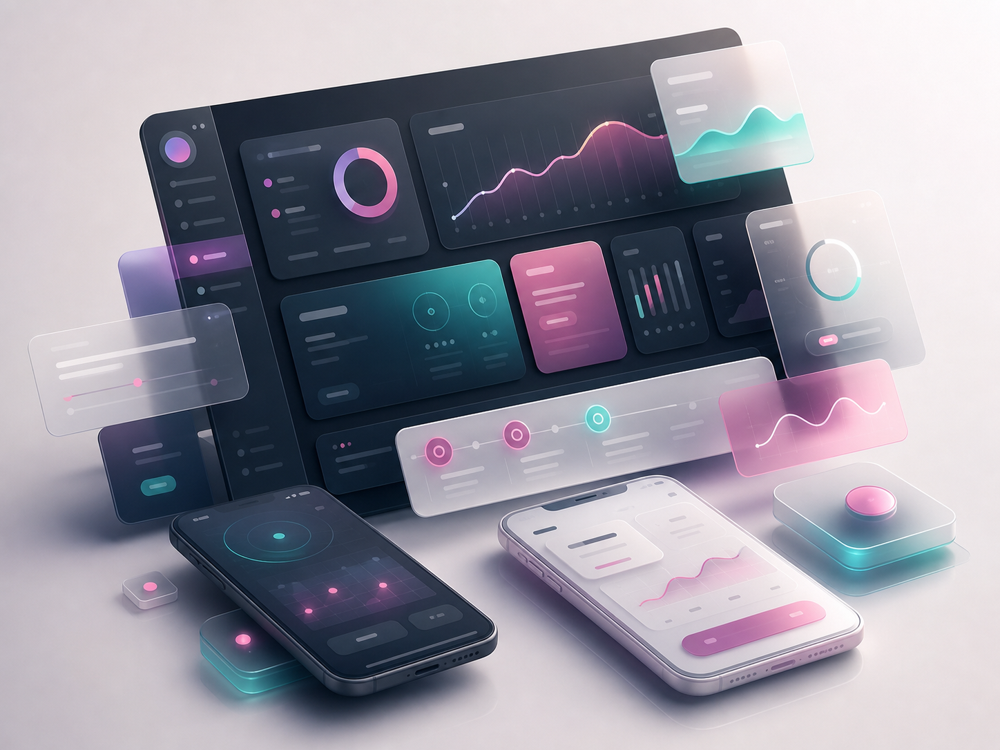

01 / How I think
Curiosity first, craft close behind.
I enjoy the early, messy part of a project: asking better questions, finding the real shape of the problem, and turning scattered pieces into something people can understand, use, and care about.
Curious builder / thoughtful collaborator / lifelong learner
I like making things that feel useful, considered, and human. Sometimes that means software. Sometimes it means shaping an idea, clarifying a problem, or helping a project find its rhythm.
01 / How I think
I enjoy the early, messy part of a project: asking better questions, finding the real shape of the problem, and turning scattered pieces into something people can understand, use, and care about.

02 / How I make
I care about taste, clarity, and momentum. Whether I am sketching a concept, building a prototype, writing through a plan, or polishing details, I want the finished thing to feel intentional rather than accidental.
03 / How I show up
I like steady progress, honest communication, and work that gets better because the people around it are paying attention. Good outcomes usually come from good taste, clear ownership, and the willingness to keep refining.
Open to the next good idea
Reach out for projects, collaborations, prototypes, or the kind of half-formed idea that gets better once someone starts giving it shape.
nickjanocik@gmail.com